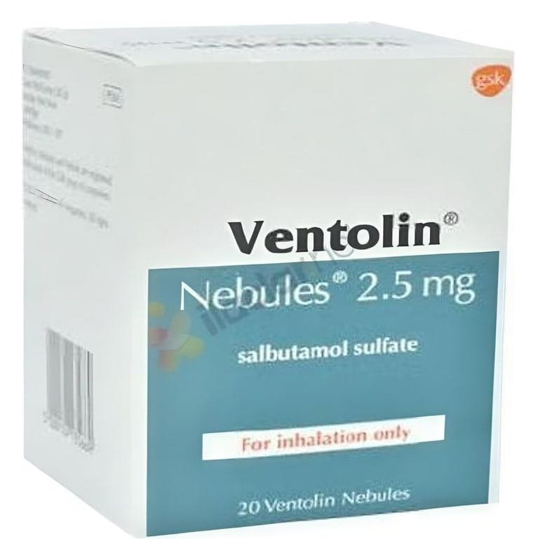

Ventolin 2,5 mg/2,5 ml Nebülizasyon Çözeltisi, 20 doz

Ne için kullanılır
KT · Bölüm 1VENTOLIN, etkin madde olarak salbutamol içerir; “hızlı etkili bronkodilatörler (bronş ları genişletici)” adı verilen bir ilaç grubunun üyesidir.
VENTOLIN; berrak, renksiz ila açık sarı renkli çözelti formundadır. VENTOLIN, normal serum fizyolojik içinde salbutamol çözeltisi içeren plastik nebüllerdir. Her nebül 2,5 ml çözelti içerir ve her kutu içerisinde 20 adet nebül bulunmaktadır. Nebüllerin içinde bulunan sıvı haldeki VENTOLIN “nebülizatör” adı verilen cihaz yardımıyla buhar haline getirilir. Ağızdan solunarak akciğerlere çekilen VENTOLIN birkaç dakika içinde hava yollarını genişleterek daha kolay nefes alıp vermenizi sağlar.
• Astımda bronkokonstriksiyonu (bronşların daralması) azaltarak semptom giderici olarak kullanılan rahatlatıcı ilaçlardır. • Kontrol edici ilaç olarak kullanılmamalıdırlar. • Kronik obstrüktif (tıkayıcı) akciğer hastalığında (KOAH) belirtileri azaltmak için ve kurtarıcı ilaç olarak kullanılır. Düzenli tedavide tercih edilmez.